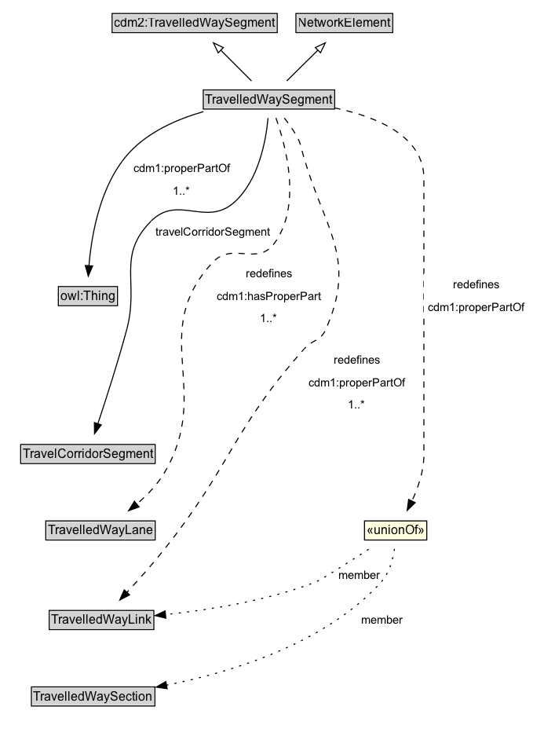

TravelledWaySegment¶
A TravelledWaySegment is a type of a transinfras:TravelledWaySegment and NetworkElement that represents a contiguous length of a TravelledWayLink characterized by the same physical characteristics.
Diagram¶

Specializations of TravelledWaySegment¶
| Class | Description |
|---|---|
| Footpath Segment | A FootpathSegment can be defined to be a part of a FootpathSection, especially when the FootpathSection does not span an entire FootpathLink. |
| Micromobility Path Segment | A MicromobilityPathSegment can be defined to be a part of a MicromobilityPathSection, especially when the MicromobilityPathSection does not span an entire MicromobilityLink. |
| Road Segment | A RoadSegment can be defined to be a part of a RoadSection, for example, when the RoadSection does not span an entire RoadLink. |
| Track Segment | A TrackSegment is a type of TravelledWaySegment that represents a portion of a TrackLink with common physical characteristics. |
| Travel Corridor Segment | A TravelCorridorSegment is a type of TravelledWaySegment that logically groups multiple TravelledWaySegments together as being co-located or side-by-side. |
Formalization for TravelledWaySegment¶
| Property | Constraint |
|---|---|
| cdm1:hasProperPart | min 1 |
| cdm1:hasProperPart | min 1 TravelledWayLane |
| cdm1:properPartOf | min 1 |
| cdm1:properPartOf | min 1 |
| travelCorridorSegment | only TravelCorridorSegment |
| subClassOf | cdm2:TravelledWaySegment |
| subClassOf | NetworkElement |
Other annotations¶
| Property | Value |
|---|---|
| xsd:pattern | TransportNetworkPattern |